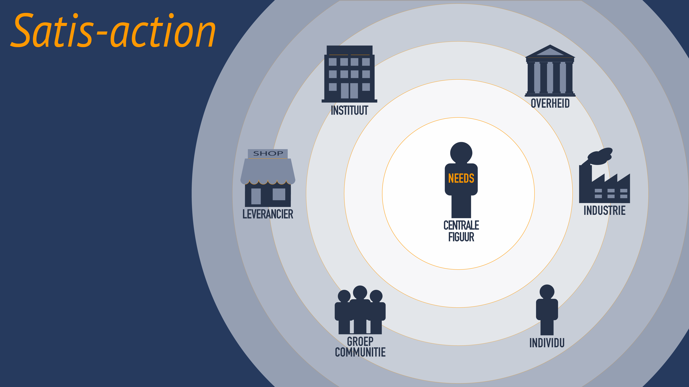
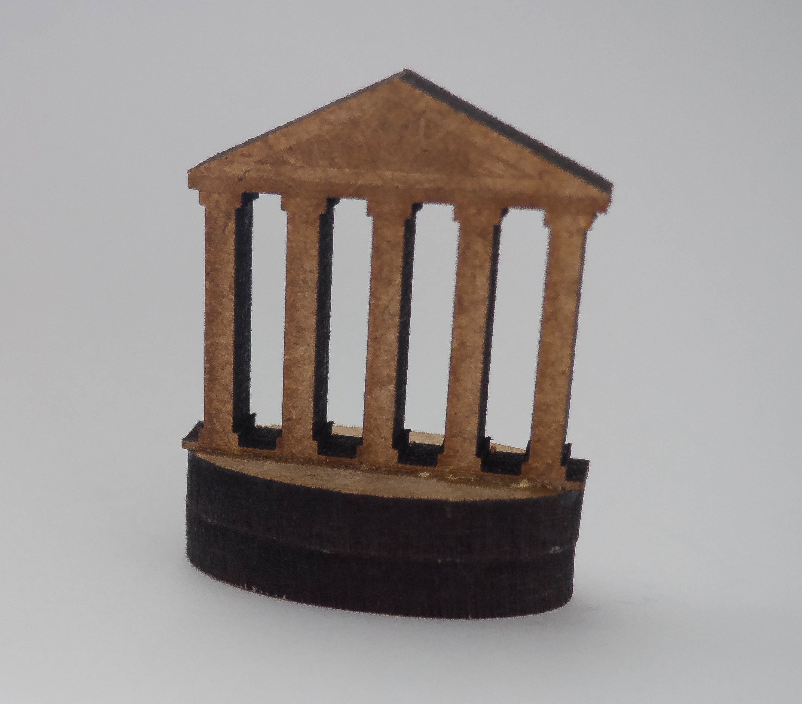
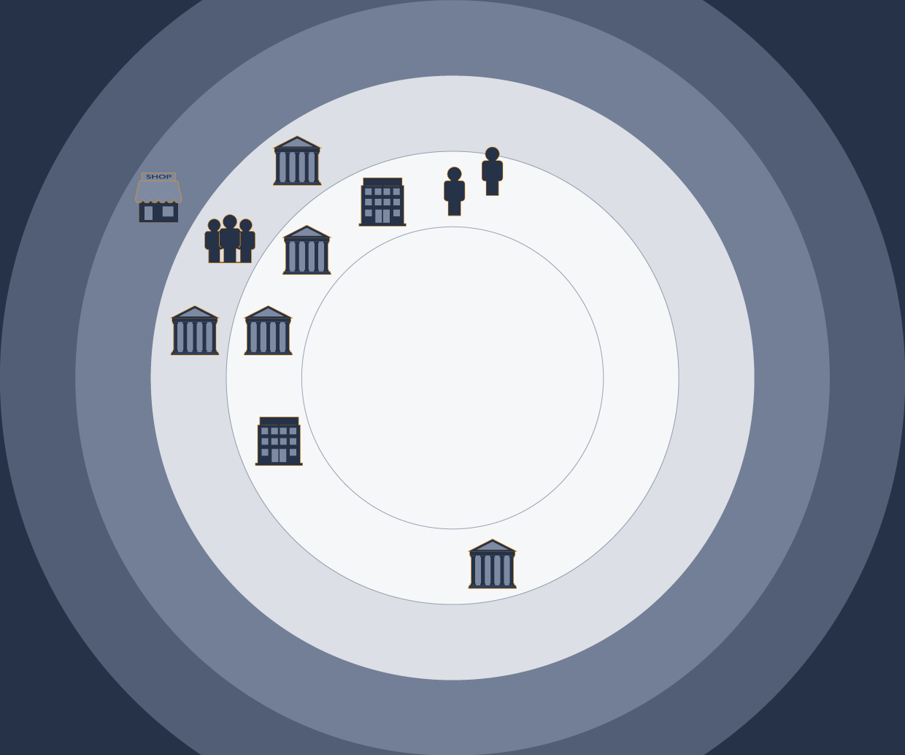
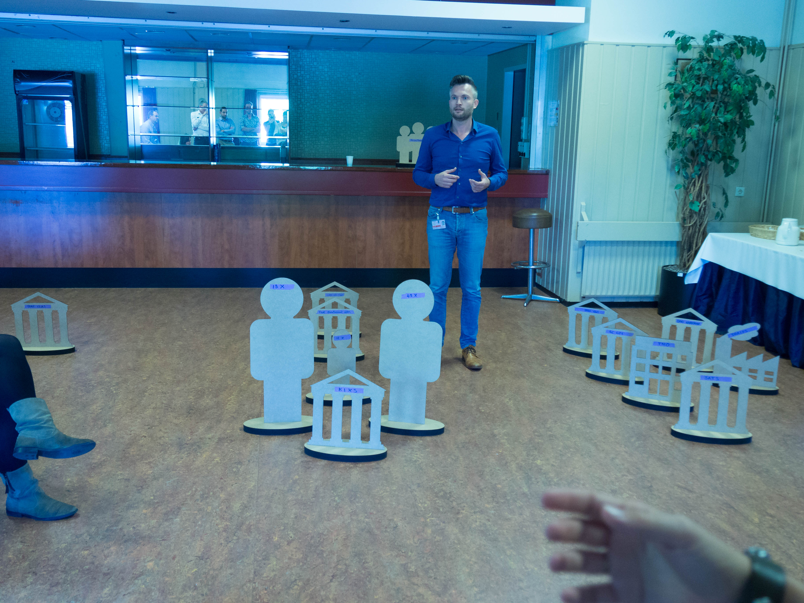

Werkt u aan een ongetemd probleem?
Wordt uw casus onoverzichtelijk door de veelheid aan partijen?
Satis-action is het instrument om u te ondersteunen in deze complexe casussen.
Wanneer de samenwerkende partners verschillende oorzaken of invalshoeken zien voor een probleem spreken we van een ongetemd probleem of 'wicked-problem'. Deze ongetemde problemen komen voor in alle lagen, sectoren en gebieden van onze maatschappij. Helaas worden zij niet zomaar opgelost.
 We leven in een maatschappij met een terugtrekkende overheid. Zij heeft niet altijd de positie om ongetemde problemen aan te pakken. Er is ook geen afzonderlijke probleemeigenaar of verantwoordelijke aan te wijzen.
Het 'vacuüm' van centrale verantwoordelijke wordt steeds vaker opgevuld door een alliantie van diverse organisaties. Deze allianties zijn van tijdelijke aard en een hierarchische macht ontbreekt. In de praktijk creëren deze allianties verrassende oplossingen.
Toch is er een categorie ongetemde problemen die lastig blijven doordat organisaties en professionals worden geconfronteerd met hun grenzen en tekortkomingen. Voor een specifieke oplossing van deze categorie ongetemde problemen zullen partijen boven zichzelf moeten uitstijgen. Daarbij wordt de wederzijdse afhankelijkheid tussen de partijen groter.

Samenwerken in wederzijdse afhankelijkheid vraagt specifieke competenties van samenwerking in een genetwerkte omgeving.
Ondermeer in het omgaan met --en voorkomen van-- botsende belangen die onheroepelijk ontstaan tussen de verschillende partijen.
In deze omgevingen zijn wederzijds begrip en betrouwbaarheid belangrijke succesfactoren.
Het vraagt ook dieper inzicht in de casus en de mogelijke interventies die iedere partner ter beschikking heeft.
Satis-action is ontwikkeld om organisaties en professionals te ondersteunen in de specifieke casus rondom een ongetemd probleem. Satis-action creërt bewustwording, begrip en inzicht in de casus. Ook worden de standpunten van de betrokken partijen duidelijk. Vanuit deze inzichten worden oplossingen ontwikkeld.
In de Satis-action methodiek worden characters gebruikt om de constellatie aan partijen te visualiseren. Deze 'stratego-achtige' tool kan in het kleine formaat (S) worden gebruikt op de vergadertafel en in groot formaat (XL) in de ruimte.